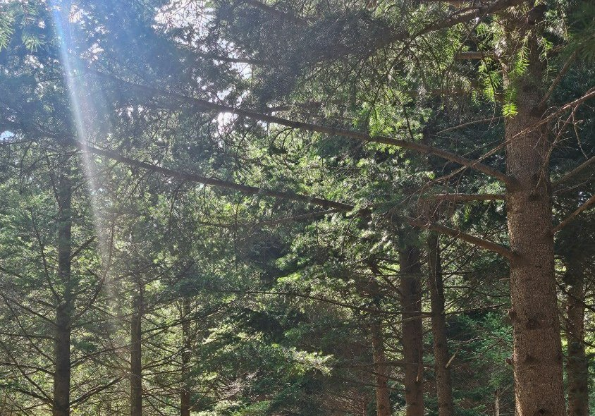
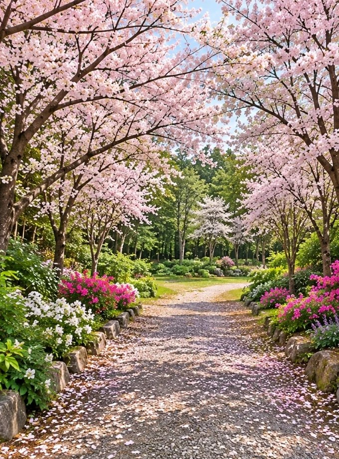

왕벚나무 4,000여 그루의 꽃길
1980년부터 한 그루씩 심은 왕벚나무 4,000여 그루가 5.5km 벚꽃 터널을 이룹니다. ‘한국의 아름다운 길 100선’에 선정되었고, 2004년 제5회 아름다운 숲 전국대회에서도 입상했습니다. 해마다 봄이면 보성벚꽃축제가 열립니다.

5.5km 벚꽃길을 지나
천년고찰 대원사 곁에 자리한 꽃길숲 수목장

1,500년을 지켜 온
천봉산 대원사
503년 창건 · 보물 제1861호 극락전 벽화
천년고찰이 직접 운영하고 지킵니다

스님들이 잠든 터,
꽃으로 피어나는 숲
대원사 역대 스님들의 부도를 모셔 온 자리
사철 푸른 전나무가 곁을 지킵니다

한 번 모시면,
대를 이어 머무는 자리
기한 제한 없이, 평생 영구 안치
이장 걱정 없이 자손에게 짐을 남기지 않습니다

수목장은 화장한 유골을 추모목 아래 흙에 모셔, 고인이 자연의 품으로 돌아가게 하는 장례 방식입니다.
나무가 자라며 고인을 포근히 품어 기억하고, 남은 가족은 숲길을 걸으며 마음을 다독입니다.
꽃길숲은 대원사 역대 스님들의 부도를 모셔 온 귀한 터로, 예로부터 좋은 자리로 여겨져 왔습니다.
천년고찰 대원사가 모시고 지킵니다
평생의 자리인 만큼, 비용도 처음부터 분명하게 안내합니다. 자리의 위치와 안치 인원에 따라 사용료가 달라집니다.
한 분을 한 그루 전나무 아래 모십니다
500만 ~ 600만원
관리비 연 7만 원
평생을 함께한 두 분이 한 나무 아래 머무십니다
700만 ~ 800만원
관리비 연 10만 원
온 가족이 한 나무 아래 함께 모십니다
800만 ~ 900만원 (3위)
900만 ~ 1,000만원 (4위)
1위 추가마다 관리비 연 2만 원
5위 이상은 상담 때 안내해 드립니다
개인목 600만 원을 60년으로 나눠 보면 한 해 10만 원 남짓입니다.
그보다 더 큰 가치는,
후손에게 이장 부담을 남기지 않는다는 점입니다.
수목장마다 사용기간과 관리방식이 다릅니다. 꽃길숲의 계약 조건은 이렇습니다.
진입로 0km에서 5.5km 꽃길숲 도착까지,
천천히 내려가며 함께 걸어 보세요.
1980년부터 한 그루씩 심은 왕벚나무 4,000여 그루가 5.5km 벚꽃 터널을 이룹니다. ‘한국의 아름다운 길 100선’에 선정되었고, 2004년 제5회 아름다운 숲 전국대회에서도 입상했습니다. 해마다 봄이면 보성벚꽃축제가 열립니다.
대원사는 백제 무녕왕 3년(503년) 아도화상이 세운 절입니다. 조선 영조 때 다시 지은 극락전(전라남도 유형문화재 제87호)은 1948년 이후의 전란 속에서 유일하게 남은 건물로, 지금도 그 자리를 지키고 있습니다. 극락전 벽화(관음보살·달마대사)는 보물 제1861호입니다.

아도화상이 꿈에 나타난 봉황의 인도로 목숨을 구한 뒤, 봉황이 알을 품고 있는 모양의 땅 ‘봉소형국(鳳巢形局)’을 찾아 산 이름을 천봉산이라 하고 절을 지었다고 전해집니다.
천봉산(天鳳山, 해발 609m)은 보성·화순·순천이 만나는 경계에 있습니다.

화장한 유골을 추모목 아래 자연으로 모시는 수목장입니다. 천년고찰 대원사가 운영하며, 사찰이 곁에서 모시고 지킵니다.
꽃길을 걸어 와, 차 향과 스님의 기도 곁에서 쉬어 가는 곳.
꽃길숲 수목장은 이 세 가지가 어우러진 자리에 있습니다.
1980년부터 심은 왕벚나무 4,000여 그루가 ‘한국의 아름다운 길 100선’에 오른 꽃 터널을 이룹니다. 해마다 봄이면 이 길에서 보성벚꽃축제가 열립니다.
대원사에는 국가중요농업유산으로 지정된 350여 년 된 고차수 군락지가 있습니다. 해마다 5월 5일 한·중·일 차 문화 교류 행사 ‘보성 다향제’가 열리고, 템플스테이에서는 차 한 잔과 함께 쉬어 갈 수 있습니다.
대원사는 떠난 이의 평안을 비는 천도 기도를 오래 이어 온 절입니다. 해마다 백일기도를 올리고, 삶과 죽음을 돌아보는 죽음체험 공간도 있습니다.


대원사를 세운 아도화상은 꿈에 나타난 봉황의 인도로 목숨을 구한 뒤, 석 달 동안 호남의 산을 헤매다 봉황이 알을 품은 형상인 봉소형국(鳳巢形局)을 찾았다고 전해집니다. 그 산을 천봉산이라 부르고 절을 지은 것이 대원사의 시작입니다.
1,500여 년 동안 이어져 온 그 품 안에, 꽃길숲 수목장이 자리합니다.
꽃길숲 이야기 더 보기 →자주 찾아뵐 수 있어야 진짜 안식처입니다.
광주 도심에서 차로 40분이면 꽃길숲에 닿습니다.
자가용 기준이며 교통 상황에 따라 달라질 수 있습니다. 오시는 길 자세히 보기 →
방문 전 답사 예약 필수미리 전화나 문자로 예약해 주세요
방문 전 답사 예약은 필수입니다.
역대 스님들이 잠든 성스러운 터, 미리 연락 주시면 꽃길숲까지 직접 안내해 드립니다.